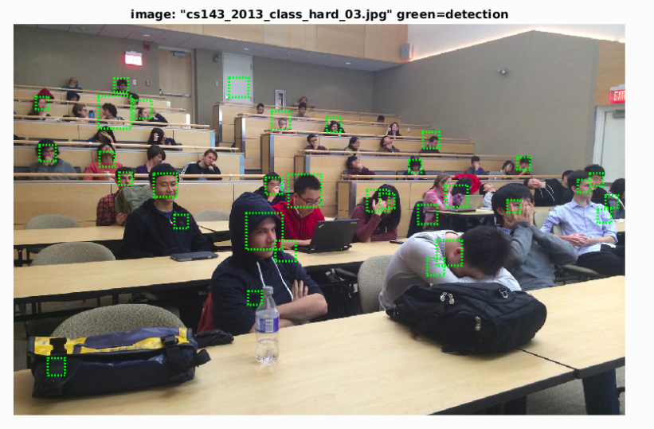

Project 4 / Face Detection with a Sliding Window
Example of a right face detection.
In this project, sliding window is implemented for face detection. As sliding window can be used in most object detection, it also works well in finding faces. The HOG (Histogram of Gradient) is used as representation of feature template, and then trained by SVM (Support Vector Machine) to locate faces in test images. Multi-scale sliding window and Hard Negative Mining are used to better the result. Mirror the HOG feature was also tried. The major steps involved can be seen as follow:
- Extract HOG from positive training images
- Extract HOG randomly from negative training images
- Train linear SVM classifier
- Detect faces (multi-scale sliding window) and non maximum suppression
The positive training images are from Caltech faces, each with one or more faces. In HOG representation, the 36*36 pixel window are tiled into 6*6 pixel cells, and each cell represented by 31 orientation bins. Hence the feature vector dimension is (templatesize / cellsize).^2*31. Apart from this, I also tried to use mirror HOG based on original ones to form more positive samples. The details are shown as follow:
Part 1. Extract HOG from positive training images
The positive training images are from Caltech faces, each with one or more faces. In HOG representation, the 36*36 pixel window are tiled into 6*6 pixel cells, and each cell represented by 31 orientation bins. Hence the feature vector dimension is (templatesize / cellsize).^2*31. Apart from this, I also tried to use mirror HOG based on original ones to form more positive samples. The details are shown as follow:
...
perm = vl_hog('permutation') ;
for i=1:1:num_images
img=single(imread([train_path_pos,'/',image_files(i).name]));%% to be same with run_detector
HOG1 = vl_hog(img, feature_params.hog_cell_size);
features_pos(2*i-1,:)=reshape(HOG1,1,[]);
HOG2 = HOG1(:,end:-1:1,perm);
features_pos(2*i,:)=reshape(HOG2,1,[]);
end
...
Part 2 Extract HOG randomly from negative training images
The sampling of negative features is achieved by selecting random windows in non face images. By trying out different values, I found total number of these random HOG features can also vary the accuracy of detection, hence the total number of negative feature here is 20000. Main process is as follow:
...
for i=1:1:num_images
img = single( rgb2gray(imread([non_face_scn_path,'/',image_files(i).name]) ));%% to be same with run_detector
[img_x,img_y] = size(img);
rand_x = ceil( rand(1,num_per_img) * (img_x -feature_params.template_size));
rand_y = ceil( rand(1,num_per_img) * (img_y -feature_params.template_size));
for j=1:1:num_per_img
rand_img = img(rand_x(j):rand_x(j) + feature_params.template_size - 1, rand_y(j):rand_y(j) + feature_params.template_size - 1);
HOG = vl_hog(rand_img, feature_params.hog_cell_size);
features_neg((i - 1) * num_per_img + j,:)=reshape(HOG,1,[]);
end
end
...
Part 3 Train linear SVM classifier
There isn't a m file for this part, it is written in proj5.m. The positive HOG feature group and negative HOG feature group are given different label and trained in linear svm. This process can be the only training in the whole process or the initial training step before Mining Hard Negatives. (lambda = 0.0001 )
...
feature = [features_pos; features_neg];
label = [ones(size(features_pos,1),1); -1 * ones(size(features_neg,1),1)];
[w, b] = vl_svmtrain(feature', label, lambda);
...
Part 4 Detect faces and non maximum suppression
After training SVM, the set of coefficient w and b can be used to detect faces in basic and extra test images. The detection process is similar to finding hard negatives. The difference is that non maximum suppression is applied in this stage. Multi-scale sliding window also has the fixed set of scaling from 0.1 to 1 and stepsize equals to cellsize:
...
for i = 1:length(test_scenes)
fprintf('Detecting faces in %s\n', test_scenes(i).name)
img = imread( fullfile( test_scn_path, test_scenes(i).name ));
if(size(img,3) > 1)
img = rgb2gray(img);
end
img = single(img);
cur_bboxes = zeros(0,4);
cur_confidences = zeros(0,1);
cur_image_ids = cell(0,1);
for s = 0.04:scale_step:1.05
scaled_img = imresize(img,s);
hog_img = vl_hog(scaled_img,feature_params.hog_cell_size);
hog_x = size(hog_img,2);
hog_y = size(hog_img,1);
if (hog_x < t_c || hog_y < t_c)
continue;
end
hog_traverse = [];
hog_x_index = [];
hog_y_index = [];
hog_traverse((hog_x - t_c + 1) * (hog_y - t_c + 1),t_c ^ 2 * 31) = 0;
hog_x_index((hog_x - t_c + 1) * (hog_y - t_c + 1),1) = 0;
hog_y_index((hog_x - t_c + 1) * (hog_y - t_c + 1),1) = 0;
for x = 1:1:(hog_x - t_c + 1)
for y = 1:1:(hog_y - t_c + 1)
hog_traverse((hog_y - t_c + 1) * (x-1) + y,:) = reshape(hog_img(y:(y + t_c - 1),x:(x + t_c - 1),:),1,[]) ;
hog_x_index((hog_y - t_c + 1) * (x-1) + y,1) = x;
hog_y_index((hog_y - t_c + 1) * (x-1) + y,1) = y;
end
end
hog_traverse_result = (hog_traverse * w) + b;
good_index = find(hog_traverse_result > confident_thresh);
...
good_hog = hog_traverse_result(good_index);
good_x_index = hog_x_index(good_index);
good_y_index = hog_y_index(good_index);
img_x_min = (feature_params.hog_cell_size * (good_x_index -1)) ./s;
img_y_min = (feature_params.hog_cell_size * (good_y_index -1)) ./s;
img_x_max = (feature_params.hog_cell_size * (good_x_index -1 + t_c -1)) ./s;
img_y_max = (feature_params.hog_cell_size * (good_y_index -1 + t_c -1)) ./s;
img_ids = repmat({test_scenes(i).name}, size(good_index,1), 1);
...
end
[is_maximum] = non_max_supr_bbox(cur_bboxes, cur_confidences, size(img));
...
end
...
Results
Hog representation sample is in the format as follow :

Precision Recall curve for the starter code.
Example of detection on the extra test set .

In conclusion, when the sampling of positive HOG feature(with the option to apply mirror results) and negative HOG feature(number of generated random windows) is the major factor influencing the level of accuracy. The setting of multi-scale sliding window and mining hard negative can help to better the results. Also, the value of detection threshold also influence the result, and value with good performance is between 0.75 and 0.85. The maximum accuracy I got is 89.5%, perhaps other techniques need to be include to elevate beyond 90%.